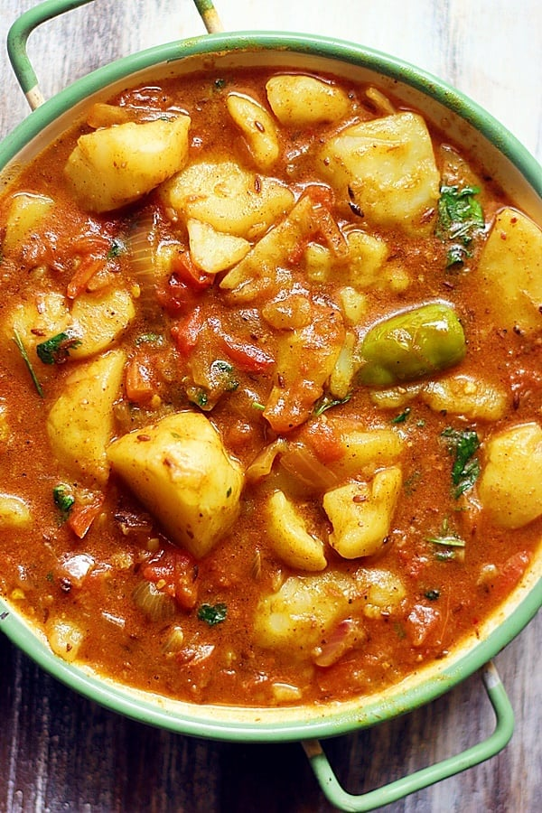

Gravy

Description
This simple recipe can transform your dish from simple and plain to exotic and flavorful.
Using no more than 4 main ingredients and between 30 and 60 minutes of your time, this simple
and easy to make gravy will be ready to embellish and accentuate your dish.
Widely considered as a staple gravy in African communities, it consists of tomatoes,
onions, potatoes, curry powder, himalayan salt and the seasoning of your choosing.
This particular recipe serves one. Make sure to stir occasionally.
Ingredients
- 1/2x Potato
- 1/2x Onion
- 1x Tomato
- Curry Powder
- Himalayan Salt
- Mediterranean Olive Oil
Steps
- Peel off the tunic and first layer of the onion.
- Dice the onion into fine pieces.
- Pour mediterranean olive oil into a appropriately sized pot until the bottom is completely covered.
- Heat the pot at medium low heat.
- Drop the onion pieces into the oil-laden pot with the lid open (make sure that the onions cook immediately).
- Add a pinch of curry powder and himalayan salt.
- Dice the potato pieces into small cubes.
- Drop the potatoes in the same pot when the onion pieces are sufficiently soft.
- Add a dash of water to the pot.
- Dice the tomato into small cubes.
- Drop the tomato pieces into the pot when the potato pieces are sufficiently soft.
- Add water as needed to allow the contents to cook fully.
- Dish up when the gravy reaches the desired consistency ;)
Main Menu